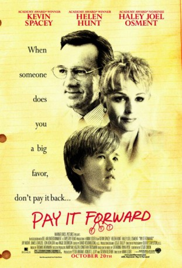

#7340 Das Glücksprinzip
Alternativ: Pay It Forward
 
 IMDB-Wertung: 7.2 / 10
IMDB-Wertung: 7.2 / 10  Metascore: 0
Metascore: 0 
Young Trevor McKinney, troubled by his mother's alcoholism and fears of his abusive but absent father, is caught up by an intriguing assignment from his new social studies teacher, Mr. Simonet. The assignment: think of something to change the world and put it into action. Trevor conjures the notion of paying a favor not back, but forward--repaying good deeds not with payback, but with new good deeds done to three new people. Trevor's efforts to make good on his idea bring a revolution not only in the lives of himself, his mother and his physically and emotionally scarred teacher, but in those of an ever-widening circle of people completely unknown to him.
Jahr: 2000
Dauer: 123 Minuten
FSK: 12
Land: USA Studio: Warner Bros.Tonspuren:
Untertitel: Englisch,
Auflösung: 1080p (1920x1080) Größe: 10076 MB
Genre: Drama
Regisseur: Mimi Leder
Drehbuch: Catherine Ryan Hyde
Soundtrack:
Darsteller:
 Kevin Spacey als Eugene Simonet
Kevin Spacey als Eugene Simonet Helen Hunt als Arlene McKinney
Helen Hunt als Arlene McKinney Haley Joel Osment als Trevor McKinney
Haley Joel Osment als Trevor McKinney Jay Mohr als Chris Chandler
Jay Mohr als Chris Chandler Jim Caviezel als Jerry
Jim Caviezel als Jerry- Jon Bon Jovi als Ricky McKinney
 Angie Dickinson als Grace
Angie Dickinson als Grace David Ramsey als Sidney Parker
David Ramsey als Sidney Parker Gary Werntz als Mr. Thorsen
Gary Werntz als Mr. Thorsen- Colleen Flynn als Woman on Bridge
 Marc Donato als Adam
Marc Donato als Adam Kathleen Wilhoite als Bonnie
Kathleen Wilhoite als Bonnie- Liza Snyder als Michelle
 Jeannetta Arnette als Nurse
Jeannetta Arnette als Nurse- Hannah Leder als Thorsen's Daughter
 Tina Lifford als Principal
Tina Lifford als Principal Zack Duhame als Rough Kid #3
Zack Duhame als Rough Kid #3- Shawn Pyfrom als Shawn
- Alexandra Kotcheff als Alexandra
- Bradley White als Jordan
- Molly Bernard als Molly
- Carrie Sullivan als School Girl
- Stephanie Feury als Sandra
 Bernard White als Cop
Bernard White als Cop Tim DeZarn als Liquid Man #2
Tim DeZarn als Liquid Man #2 Jonathan Nichols als Liquid Man #3
Jonathan Nichols als Liquid Man #3- Bob McCracken als Creepy Middle-Aged Man
- Eugene Osment als Cop Who Gives Directions
 Rusty Meyers als News Stand Guy
Rusty Meyers als News Stand Guy Cynthia Ettinger als (unconfirmed
Cynthia Ettinger als (unconfirmed- Jeremy Dunn als Diner Patron , uncredited
 Sebastian Feldman als Looky Lou , uncredited
Sebastian Feldman als Looky Lou , uncredited- Lana Kinnear als Dancer , uncredited
- Loren D. Baum als Rough Kid #1
- Nico Matinata als Rough Kid #2
- Christi Colombo als Christi
- Phillip D. Stewart als Phillip
- Justin Parsons als Justin
- Myeshia Dejore Walker als Myeshia
- Brenae Suzanne Davey als Brenae
- Andrew Patrick Flood als Andy
- Tameila N. Turner als Tameila
- Julian Correa als Julian
- Patricia Deanda als Change Girl
- Ryan Berti als Hallway Kid #1
- Gabriela Rivas als Hallway Kid #2
- Carrick O'Quinn als Man in Window
- Tom Bailey als Liquid Man #1
- Ron Keck als Lowlife #1
- John Powers als Lowlife #2
Datei: X:\2000\Glücksprinzip, Das (2000, FSK12, 1920x1080).mkv seit 17.10.2017
Festplatte: HD 1996-2002
 Es gibt insgesamt 82 Filme in der Gruppe '2000'
Es gibt insgesamt 82 Filme in der Gruppe '2000'